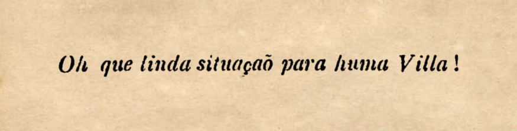
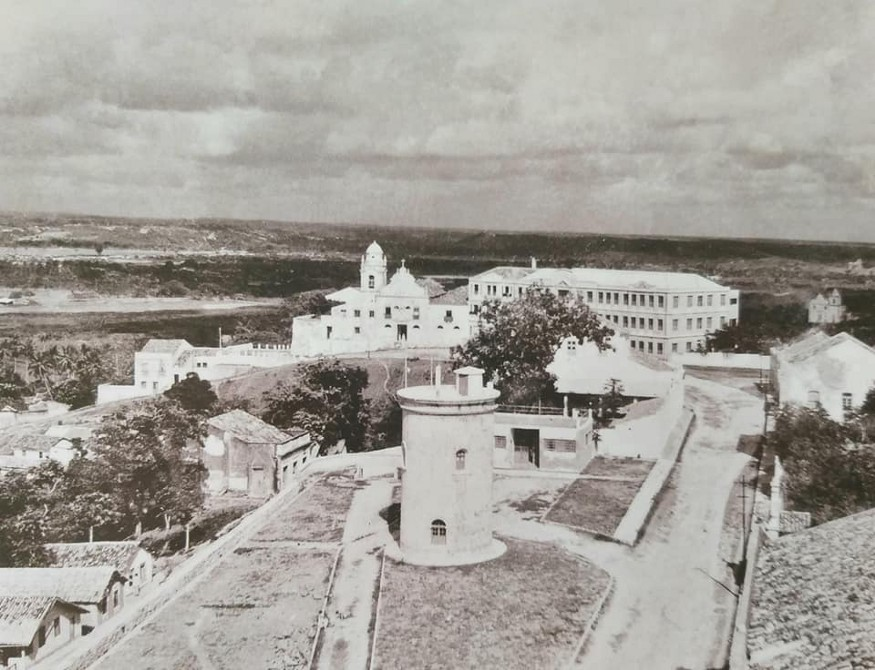
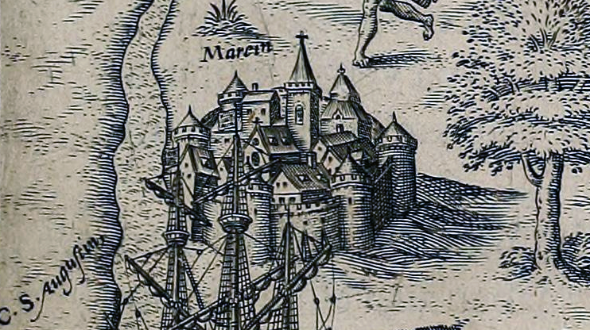

🦀 Oh! Linda situação para uma vila!
🦀 Oh! Linda situação para uma vila!
“A cidade de Olinda, Pernambuco” por Johannes Janssonius (1630).
Tem essa história que Duarte Coelho chegou no Alto da Sé e viu aquele lugar tão verde, ventilado e com uma linda vista para o mar, onde era possível em um dia de bom tempo ver o Cabo de Santo Agostinho e a Ilha de Itamaracá. Diante desse cenário bradou:

por {{ page.author }} em {{ page.date | date: "%d/%m/%Y" }}.
A chegada de Duarte Coelho ao Alto da Sé marca um momento muito curioso da vida local e da cultura brasileira. Momentos como esse ilustram como é difícil traçar de volta a análise das populações originais .
Refletindo sobre esse termo, usado para designar as comunidades das terras brasileiras anteriores aos portugueses, percebi que tomá-los como “original” significa que houve uma ruptura em algum momento, um evento que fez com que eles deixassem de ser os moradores originais. Esse evento seria a chegada dos europeus. Mas mesmo antes da presença europeia, as nações que aqui viviam já executavam rupturas entre si mesmas. Os caetés habitantes de Olinda, por exemplo, possivelmente não foram os primeiros habitantes dessas terras, que já eram percorridas milênios antes por outras populações.
Nomear os tupis como povos originais é uma conformidade do nosso pensamento às filosofias eurocêntricas que estabelecem um marco entre um “antes” e um “depois” deles mesmos. O morro de Olinda pode ter tido outros moradores no passado, originais. De certo, no momento de contato com os europeus, Marim era habitada pelos caetés.
Recorte de “Olinda”, Ioannis Blaeu (1647).
Quando Duarte Coelho chegou na aldeia de Marim, isto é, Olinda, assistiu algumas movimentações francesas ocorrendo ao sul do morro. No porto de Olinda (Recife), e nas praias e portos do litoral à sul. Os franceses visitavam as terras para comercializar com os caetés. E assim era por toda a costa do Brasil.
A escola de navegação francesa nessa época participava de um embate com seu rei, Francisco I. Acontece que o rei não se importava com as relações dos franceses com as populações nativas do Brasil, enquanto os navegantes argumentavam que não haveria sucesso comercial no Brasil se a nação França não se aliasse as demais nações brasileiras. Iniciadas as expedições francesas em 1503, em menos de 5 anos, eles haviam conquistado a amizade de todas as nações costeiras e isso só se confirma nos relatos portugueses. Nesse espaço de 5 anos, os franceses entraram mais no continente do que os portugueses entrariam em 50.
Fora desta cidade, havendo muitos franceses pela costa e roubando barcos e navios […] a estratégia era estimular a gente da terra a ter vontade [de trabalhar para os franceses], e os próprios franceses vão mais de quinze ou vinte léguas, para colher o brasil terra a dentro, somente com 6 ou 7 pessoas em cada nau.
Visto que havia uma considerável integração, um maior diálogo, entre os franceses e os nativos, na época da chegada de Duarte Coelho em Olinda, os contemporâneos todos tratavam a aldeia por Marim, que é uma corruptela das palavras do francês marin (marinheiro) e mairie (cidade), ou seja, o modo como os franceses chamavam a aldeia foi adotado pelos próprios moradores. Se os moradores da taba (aldeia) se chamavam tabajaras ou tabaiaras, os moradores de Marim eram mairiaras¹.
Recorte das vistas de Olinda e Recife, Joannes de Laet (1644). Essa visão da vila é do século 17, 100 anos depois de sua ocupação pelos portugueses.
Não há relatos se foi utilizado de força na tomada da aldeia de Marim. Supõe-se que foi, uma vez que o tratamento dado pelos portugueses aos moradores da vila e vizinhança foi o pior possível. Em vários relatos se lê atrocidades e traições cometidas pelos brancos (impositores da sua vontade sob ferro e fogo), mas alguns autores ainda atrevem-se a culpar a “selvageria” daquelas comunidades ou uma influência francesa para que os caetés se voltassem contra os portugueses. É verdade que há muita influência contrária a Portugal na formação de opinião nativa sobre as comunidades europeias que por ali se estabeleciam, mas não há como se esquivar do fato que Portugal era a única responsável pela ira daquelas comunidades nativas.
A primeira ação de Duarte Coelho foi levantar uma torre simples de pedra, caiada, que serviria como sua residência e como fortaleza para intimidação e proteção às contra-investidas dos caetés. O Castelo de Olinda ficava no centro da rua que liga a Igreja da Sé à da Misericórdia, igrejas ainda inexistentes no tempo em que ele foi levantado. O Alto da Sé era a oka-ra de Marim, ou seja, a praça central da aldeia e suas residências, as okas, eram construídas em sua volta. A construção de Duarte Coelho era uma torre de vigia em estilo arquitetônico manuelino, tipo uma versão bem mais simples e pintada de branco da Torre de Belém de Lisboa.
Torre do observatório e igreja da Misericórdia ao fundo (década de 1940). O elevado desse pátio lembra as bases de um castelo europeu. Fotografia da página Recife de Antigamente.
Os primeiros anos da vila foram de total pressão para a expulsão dos portugueses. Por muitas vezes os franceses bloqueavam passagem pelo mar e os caetés, em ação conjunta, pelo continente, deixando a vila sem abastecimento de água e alimentos, que vinham das partes baixas do morro. A ajuda partiu de uma aldeia vizinha, aliada aos portugueses, que, como descreveu frei Jaboatão, a filha do líder dessa aldeia “afeiçoou-se” por um português chamado Vasco Fernandes Lucena, que falava tupi e mantinha diálogos com as populações nativas. Diz-se que Vasco era também pretendido por outros líderes de aldeias vizinhas para casar-se com suas filhas. Não há como saber exatamente se essa motivação era legítima da parte nativa, uma vez que a descrição desse mecanismo de arranjo matrimonial, suas consequências e o próprio matrimônio em si, são traços culturais europeus. A história aí pode ter sido completamente enviesada sob a retórica do opressor.
Vasco Lucena, tão próximo das populações nativas, é o ator principal de um mito muito paradoxal da vila e que deixa claro o viés do opressor, na minha opinião. Acontece que um dia, durante esse momento de bloqueio contra os portugueses, Vasco saiu do castelo, chegou no meio de um grupo de nativos que cercava a fortificação e começou a discursar, dizendo como a vida nativa era errada, avisando que eles se tornassem amigos dos portugueses e que se afastassem dos franceses. Depois disso, tomou uma vara de pau na mão, fez um risco comprido no chão e disse:
Avisem a todos que aquele que tentar atravessar essa linha em direção a fortaleza será morto.
Os nativos ouvindo isso começaram a rir. Só podia ser uma piada. Pois então 7 ou 8 caetés cruzaram a linha para desafiar Vasco. Só em cruzar a linha, como se fizesse mágica, os homens cairam mortos. Desconfiando que aquilo seria feitiçaria, os outros caetés fugiram daquele lugar. O relato de frei Jaboatão termina dizendo que esse assassinato foi uma providência divina e que o risco no chão serviu de referência para construção da Sé olindense, próxima ao castelo, como uma benção sobre os coitados portugueses que estavam cercados pelos “selvagens” e pelos franceses oportunistas.
Recorte de “Americae tertia pars” e a representação da cidade de Olinda com a torre central (1592). A versão completa e colorida dessa imagem se encontra neste post passado.
Uma simples ilustração do que era ser nativo de Olinda no começo do século 16 é o primeiro parágrafo do terceiro capítulo do livro “Duas Viagens ao Brasil”, obra que conta as aventuras de Hans Staden pelo Brasil:
Por culpa dos portugueses, eclodiu um tumulto dos selvagens numa região, a dos Caetés, que até então tinha sido tranqüila, e o capitão do país nos implorou pela graça de Deus que acorrêssemos em ajuda à localidade de Igarassu, a cinco milhas de Olinda e que os selvagens estavam prestes a tomar. Os habitantes de Olinda, frente à qual estávamos ancorados, não podiam socorrer a outra localidade, pois temiam eles mesmos sofrer um ataque dos selvagens.
O estigma de selvagem, canibal, ser animalesco era constantemente atribuído a essas populações, ao mesmo tempo em que os portugueses os provocavam, escravizavam, matavam e ocupavam suas terras. Em algum momento a estratégia de embate direto não daria certo. A quantidade de portugueses era muito inferior para garantir a velocidade do domínio. Seria necessário um modo alternativo de conquista e subversão dessas populações.
¹ Aqui deixo novamente minha dúvida sobre a legítima confusão entre caetés e tabajaras. Enquanto as descrições dos povos de Pernambuco mostram marcas culturais únicas entre os caetés e potiguares, os tabajaras são descritos apenas como “senhores da terra” ou “moradores da aldeia”, sem nenhuma característica exclusiva, que os marca como diferentes, nem ocupação geográfica definida, ao menos na costa pernambucana.
Outras curiosidades: os falantes de tupi que moravam em uma aldeia diferente da sua eram tabarés, de onde procede a gíria tabaréo, o bronco, o matuto. Já a palavra “tabacudo” não tem origem no tupi.
As citações desse texto são pedaços da história das capitanias de Itamaracá e Pernambuco na segunda parte da obra de frei Jaboatão citada abaixo.